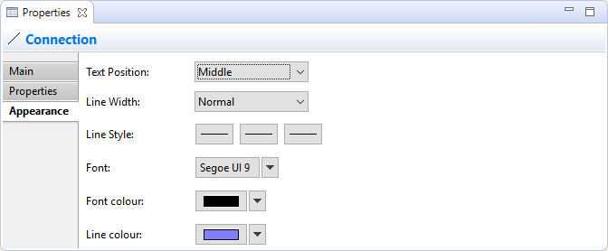

Selecting a Connection in a View means that you can edit or view its properties in the Properties Window.
The Main Tab

Editing the "Main" Properties for a Connection
| Name: | The name of the Connection. If supplied this will appear next to the Connection on the View. |
| Documentation: | A space to enter some user documentation relating to the Connection |
The Properties Tab
For more information about creating and managing User Properties see User Properties.
The Appearance Tab
Editing the "Appearance" Properties for a Connection in a View
| Show Label: | If selected will show the label if the connection's text is set. |
| Text Position: | Sets the position of the text that will appear next to the line on the View. Options are "Source", "Middle" and "Target". |
| Line Width: | Sets the width of the connection line. Options are "Normal", "Medium" and "Heavy". |
| Line colour: | Sets the colour of the connection line. The "Default" button sets the line colour to the default setting. |
| Line Style: | Sets the connection line's source and target head types, and main line style. |
| Font: | Sets the font used for the text in the selected connection. The "Default" button sets the font to the default setting as set in Preferences. |
| Font colour: | Sets the colour of the font used for the text in the selected connection. The "Default" button sets the font colour to the default setting. |
The Label Tab
By default, a connection's name will be displayed in the View in which it appears. Using a label expression, you can choose what is displayed for the connection. For example you may wish to display the connection's name and one or more of its properties.
For a full list of expression types please refer to the Archi Wiki.